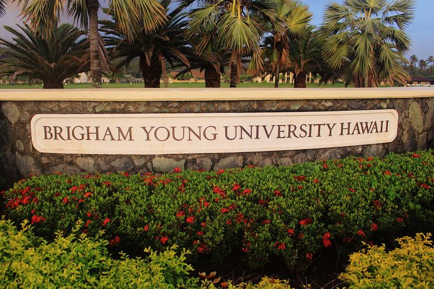
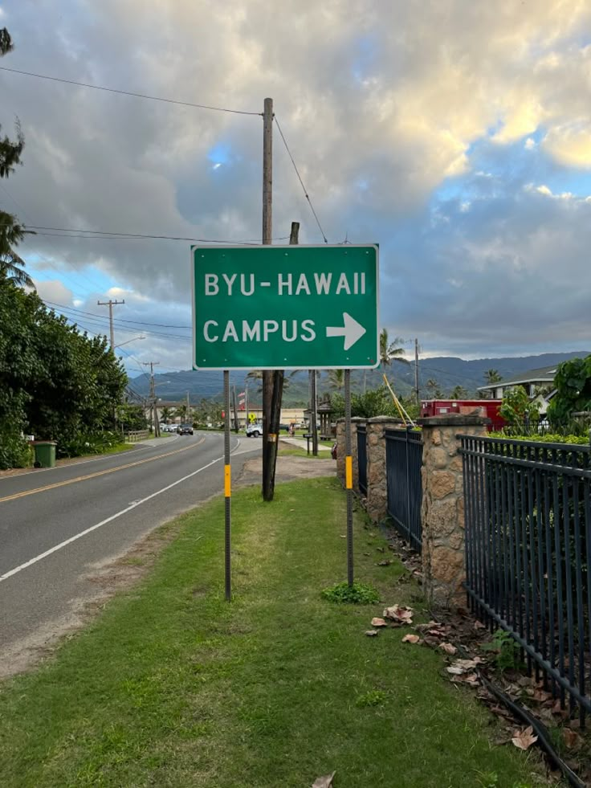

Brigham Young University-Hawaii (BYUH) is a private university located in Laie, Hawaii. It is owned and operated by The Church of Jesus Christ of Latter-day Saints (LDS Church).
Beyond its academic programs, BYU Hawaii plays an important cultural role by bringing together people from diverse backgrounds to learn, share traditions, and build understanding across cultures. The university's close connection with the Polynesian Cultural Center helps preserve and celebrate the cultures of the Pacific Islands through performances, education, and cultural exchange. This unique multicultural environment makes BYU–Hawaii an important center for education, cultural preservation, and leadership development in Hawaii.
